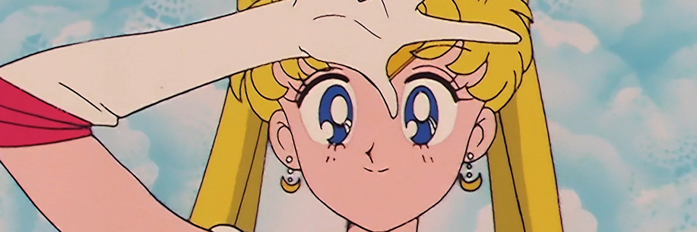

About Sailor Moon
Usagi Tsukino (Sailor Moon), a middle school student who is given the power to become a Pretty Soldier. Joined by other Sailor Soldiers, she defends Earth against an assortment of evil villains.
This is Sailor Moon, she is a magical girl warrior/super-heroine who gains her powers from the moon.
Her Friends/Other Sailor Soldiers

- Sailor Mercury: The first Sailor Guardian discovered by Sailor Moon. She is the group's "brains" and has powers associated with water and ice. ★
- Sailor Mars: Embodies aggression and mystique. Her powers include fire, psychic clairvoyance, and the Ofuda charm. ★
- Sailor Jupiter: Displays brute force. She is part of the Inner Guardians, despite being beyond the asteroid belt that separates the "inner" and "outer" planets. ★
- Sailor Venus: Represents love and riches. ★